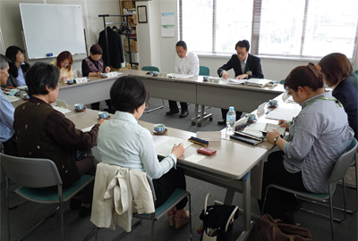

- 【日 時】
- 5月13日（月）10:00～11：50
- 【場 所】
- 埼玉県生協連 会議室
- 【出 席】
- 11人（県婦連、新婦人、母親大会連絡会、県生協連、埼玉消団連、生協ネットワーク協議会、事務局）

【議 題】
1．食の安全オンブズ会議要綱確認 目的や構成について確認を行いました。
2．学習懇談会 「埼玉県食の安全・安心の確保に関する基本方針」について
講師：埼玉県食品安全課 主査 大本和俊氏
- 平成16年「埼玉県食の安全・安心条例」を制定。その後、平成19年条例に基づき「埼玉県食の安全・安心の確保に関する基本方針」を策定しています。
- 基本的な施策の3つの柱
 安全な食品の生産・供給の促進…農薬や動物用医薬品等の適正使用、特別栽培農産物の普及、自主衛生管理とトレーサビリティシステムの導入支援、食品産業との連携、地産地消・研究・環境保全・食品循環資源利用等の推進。
安全な食品の生産・供給の促進…農薬や動物用医薬品等の適正使用、特別栽培農産物の普及、自主衛生管理とトレーサビリティシステムの導入支援、食品産業との連携、地産地消・研究・環境保全・食品循環資源利用等の推進。
 生産から消費にわたる監視・指導の徹底…現在の食品衛生監視指導計画に。
生産から消費にわたる監視・指導の徹底…現在の食品衛生監視指導計画に。
 県民参画による相互理解と信頼関係の構築…県政モニターアンケート、リスクコミュニケーション、正しくわかりやすい情報・知りたい情報の提供。
県民参画による相互理解と信頼関係の構築…県政モニターアンケート、リスクコミュニケーション、正しくわかりやすい情報・知りたい情報の提供。
- 推進体制…消費者・生産者・流通・学識者等の県民参画による「食の安全県民会議」を行っています。庁内の連携のために「食の安全推進会議」を設置し、施策の進捗状況を把握→「食の安全・安心確保に向けた施策の実行計画」を策定しています。
- 国・他県・市町村・関係団体と連携し、情報交換、リスコミの実施、情報発信、意見等の調査をおこなっています。
- 危機管理体制…条例に基づき必要な体制を整備します。平常時から危機管理体制の推進と緊急時の備えを行うこと。市町村との連携により、情報の共有と提供を行います。
3．2012年度活動報告（案）と2013年度活動方針（案）について確認しました。
4．埼玉県食品安全局、関東農政局との懇談会の議題について
- 共通項目でも懇談したい。
- 放射能による食品の汚染については引き続き情報提供してほしい（農：海産物について、県：キノコ類、山菜など市町村への検査等の働きかけについて）
- 「食の安全・安心確保に向けた施策の実行計画」の実施状況